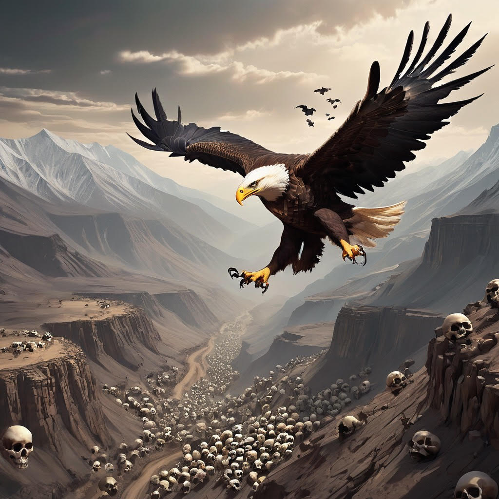

Journey To The Dead Valley
In a small village nestled at the foot of towering mountains, three lifelong friends named Ahmed, Malik, and Ibrahim lived simple lives. They were always fascinated by the tales of the Dead Valley, a mysterious and treacherous place shrouded in legends of hidden treasures and ancient secrets. One fateful day, as the sun painted the sky with vibrant hues of orange and gold, Ahmed stumbled upon an ancient map hidden in the attic of his family's home. The map depicted the way to the legendary Dead Valley, and excitement surged through their veins. They knew that this was their chance to embark on the adventure they had always dreamed of. Gathering their courage, the trio set off on their quest, armed with provisions, determination, and a burning curiosity. The journey was anything but easy, as they traversed dense forests, crossed treacherous rivers, and climbed steep cliffs. But their friendship and unwavering spirit kept them going. Days turned into weeks as they ventured deeper into uncharted territory. The landscape transformed from lush greenery to desolate wastelands, and the air grew heavy with an eerie silence. The legends surrounding the Dead Valley seemed to come alive, filling their hearts with both excitement and apprehension. Finally, after facing numerous challenges and overcoming countless obstacles, they arrived at the entrance of the Dead Valley. The sight before them was both awe-inspiring and haunting. The valley was a barren expanse, devoid of life, with jagged rocks and swirling sands stretching as far as the eye could see. Undeterred by the ominous atmosphere, the trio pressed on, following the map's intricate markings. As they delved deeper into the valley, they encountered strange phenomena and witnessed remnants of a forgotten civilization. Each step brought them closer to unraveling the secrets that lay hidden within the valley's depths. As they ventured further, they stumbled upon a series of trials designed to test their courage, intelligence, and loyalty. They faced riddles, solved puzzles, and braved perilous traps, all while relying on their unwavering bond and trust in one another. Finally, at the heart of the Dead Valley, they discovered a magnificent chamber adorned with ancient artifacts and untold riches. But it wasn't the material wealth that captivated them the most. It was the knowledge that they had conquered their fears.

Journey To The Dead Valley
Adventure · 1 year ago